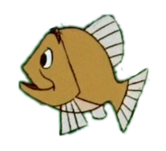
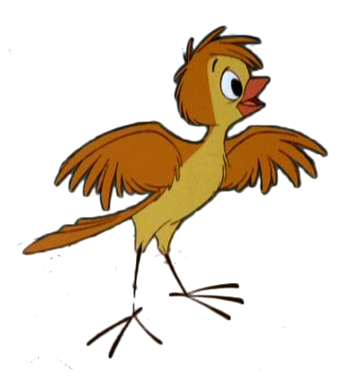

Open the folder petit_bain_web which is located on the desktop of your workstation.
You will find there the files 19.html and 19.css, and some more images.
Opens these files 19.html and 19.css with Sublim Text, by right clicking on the files and choosing "open with" Sublim Text in applications.
(Sublim Text is a text editor, like Word or Open Office, but specifically for code. There are others, but why not him?)
You can now write html code in 19.html, where indicated, and css in 19.css
To make it easier for you if you want to include images, we have already provided you with some.
To view your work, it's easy: double-click on 19.html, the file will open in a web browser.
Each time you modify any of the 19.html or 19.css files, you only have to refresh the page in the browser.
A trick: on your web page in the browser: right click, then "Inspect
The browser console will open.
And you can see all your code and modify it!
You will see the changes live on your page, which is very convenient for working.
But be careful, these changes are temporary and will disappear at the next page refresh.
Don't forget to copy and paste these temporary changes into your 19.html and 19.css files to save them.